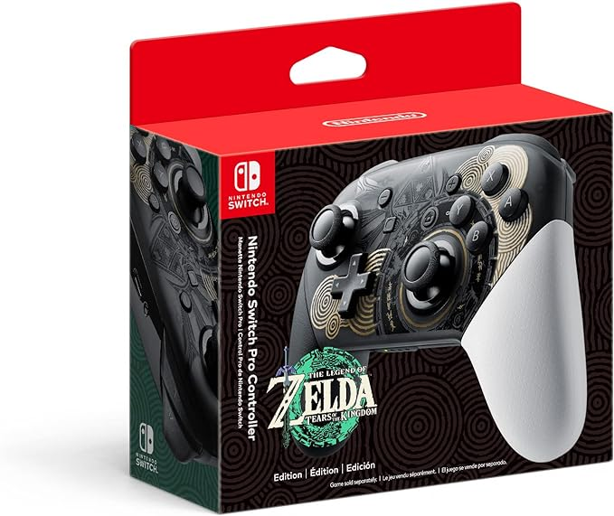
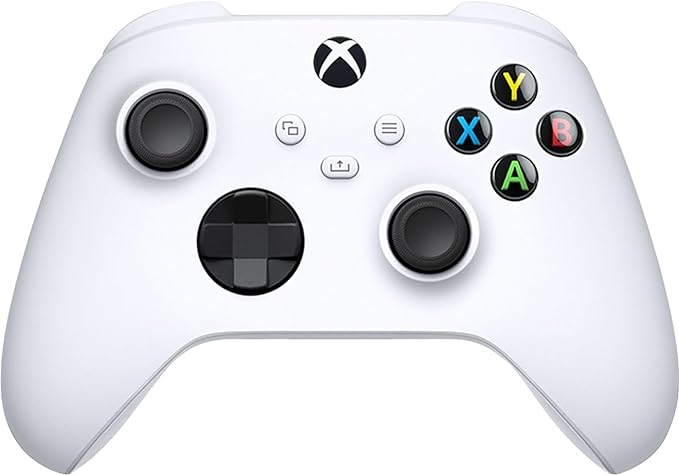
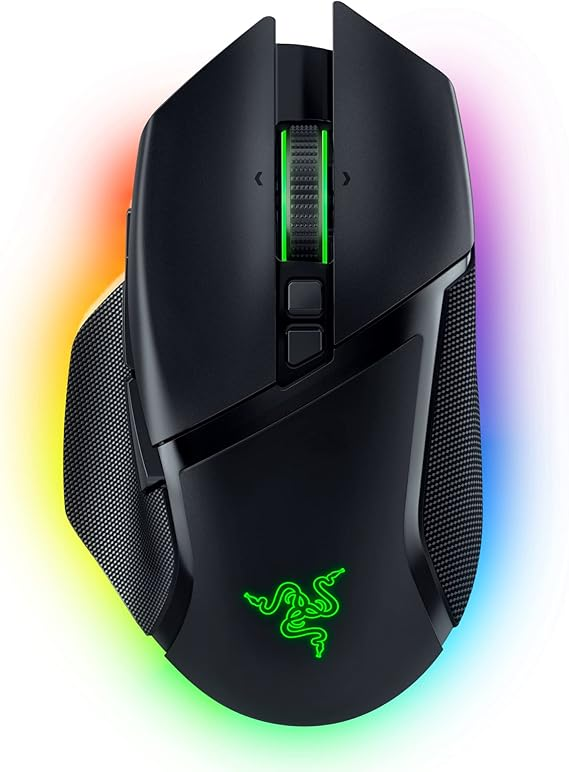
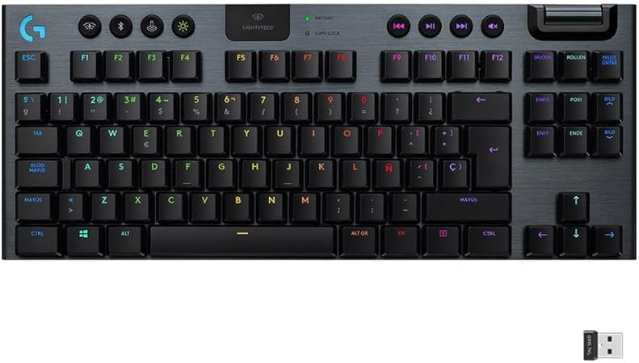
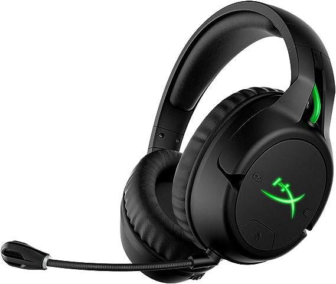

| Embárcate en una épica aventura a través de la superficie y los cielos de Hyrule con el control Pro de Nintendo Switch - Edición The Legend of Zelda: Tears of the Kingdom.
Incluye el control por movimiento, la vibración HD, funcionalidad amiibo* incorporada y más
amiibo no incluido. por solo $1 300 |
 |
|---|---|
| Cuenta con Bluetooth. Pantalla táctil. Mando inalámbrico. Compatible con: Computadoras. Con sistema de vibración incorporado. Cuenta con manual. Diversión garantizada con tu joystick PlayStation. Diseño ergonómico. por solo $1 400 |
 |
| Experimenta el diseño moderno del control inalámbrico Xbox Robot White, con superficies esculpidas y geometría refinada para disfrutar de una mayor comodidad durante el juego
No pierdas el objetivo con el Pad direccional híbrido y agarre texturizado en los gatillos, bumpers y carcasa trasera y con el nuevo Pad direccional híbrido para una entrada precisa y familiar
Configura los botones con la aplicación Accesorios de Xbox para personalizar el control. Conecta cualquier auricular compatible con el conector para auriculares de 3,5 mm por solo $1 100 |
 |
| Forma ergonómica refinada Forma ergonómica refinada Switches de mouse ópticos Razer Gen-3 Razer HyperSpeed Wireless por solo $2600 |
 |
| Tecnología inalámbrica LIGHTSPEED Para un rendimiento profesional con flexibilidad y sin ataduras de cables. G915 TKL crea una estética despejada para tus puestos de combate. Hasta 40 horas de uso con una sola carga completa. (Layout Inglés) RGB LIGHTSYNC La iluminación RGB del teclado se sincroniza con cualquier contenido. Personaliza cada tecla o crea animaciones personalizadas a partir de ~16,8 millones de colores con el software Logitech G HUB. por solo $2 300 |  |
| Audífonos con licencia oficial Xbox. Audífonos inalámbricos para gaming con batería de larga duración. Comodidad y durabilidad galardonadas de HyperX. Mezclador de chat incorporado en el audífono. Audio intuitivo y controles para micrófono y chat. Nota: Al conectar los auriculares al sistema de la Xbox One no se silencia o ajusta automáticamente el sonido del televisor. Mantén pulsado el botón de silencio del micrófono durante 3 segundos para activar o desactivar el control del micrófono. por solo $2300 |
 |